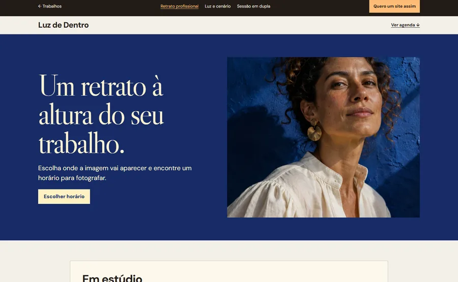
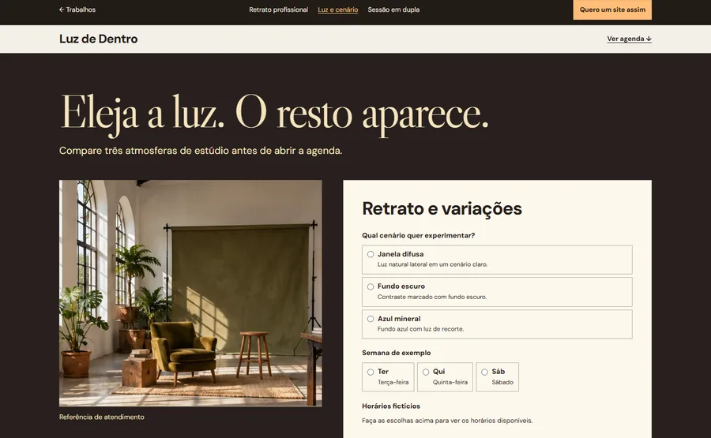
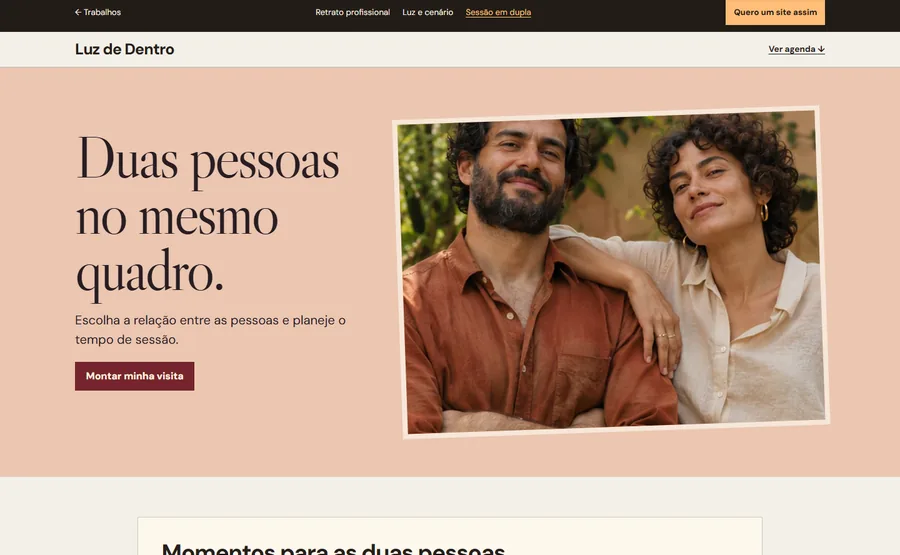

Estúdio de retratos. Compare três formas de preparar uma visita.

Escolha onde a imagem vai aparecer e encontre um horário para fotografar.

Compare três atmosferas de estúdio antes de abrir a agenda.

Escolha a relação entre as pessoas e planeje o tempo de sessão.